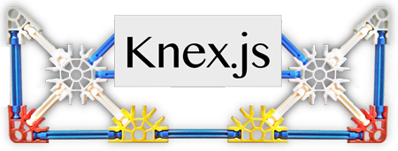

Knex.js is a "batteries included" SQL query builder for Postgres, MySQL, MariaDB, SQLite3, and Oracle designed to be flexible, portable, and fun to use. It features both traditional node style callbacks as well as a promise interface for cleaner async flow control, a stream interface, full featured query and schema builders, transaction support (with savepoints), connection pooling and standardized responses between different query clients and dialects.
The project is hosted on GitHub, and has a comprehensive test suite.
Knex is available for use under the MIT software license.
You can report bugs and discuss features on the GitHub issues page, add pages to the wiki or send tweets to @tgriesser.
Thanks to all of the great contributions to the project.
Special thanks to Taylor Otwell and his work on the Laravel Query Builder, from which much of the builder's code and syntax was originally derived.
Latest Release: 0.10.0 - Change Log
Current Develop —

Upgrading
Upgrading 0.9 -> 0.10
Knex will no longer interpret `undefined` values as `null` for `insert` or `update`. See changelog for links to relevant issues.
Upgrading 0.8 -> 0.9
There should be no major changes breaking the external API. If you encounter issues, please open a ticket.
Upgrading 0.7 -> 0.8
There should be no major changes breaking the external API. If you encounter issues, please open a ticket.
Upgrading 0.6 -> 0.7
Should be a painless upgrade, the only breaking change should be "collate nocase" no longer used as the default order by in sqlite3 for performance reasons. If there are other issues, please open a ticket.
Installation
Knex can be used as an SQL query builder in both Node.JS and the browser, limited to WebSQL's constraints (like the inability to drop tables or read schemas). Composing SQL queries in the browser for execution on the server is highly discouraged, as this can be the cause of serious security vulnerabilities. The browser builds outside of WebSQL are primarily for learning purposes - for example, you can pop open the console and build queries on this page using the pg, mysql, and sqlite3 objects.
Node.js
The primary target environment for Knex is Node.js, you will need to install the knex library, and then install the appropriate database library: pg for PostgreSQL, mysql for MySQL or MariaDB, or sqlite3 for SQLite3.
$ npm install knex --save # Then add one of the following (adding a --save) flag: $ npm install pg $ npm install sqlite3 $ npm install mysql $ npm install mysql2 $ npm install mariasql $ npm install strong-oracle $ npm install oracle
Browser
Knex can be built using browserify or webpack, and a pre-built version can be found in the build directory. View source on this page to see the browser build in-action.
Initializing the Library
The knex module is itself a function which takes a configuration object for Knex, accepting a few parameters. The client parameter is required and determines which client adapter will be used with the library.
var knex = require('knex')({
client: 'mysql',
connection: {
host : '127.0.0.1',
user : 'your_database_user',
password : 'your_database_password',
database : 'myapp_test'
}
});
The connection options are passed directly to the appropriate database client to create the connection, and may be either an object, or a connection string:
var pg = require('knex')({
client: 'pg',
connection: process.env.PG_CONNECTION_STRING,
searchPath: 'knex,public'
});
Note: When you use the SQLite3 adapter, there is a filename required, not a network connection. For example:
var knex = require('knex')({
client: 'sqlite3',
connection: {
filename: "./mydb.sqlite"
}
});
You can also connect via an unix domain socket, which will ignore host and port.
var knex = require('knex')({
client: 'mysql',
connection: {
socketPath : '/path/to/socket.sock',
user : 'your_database_user',
password : 'your_database_password',
database : 'myapp_test'
}
});
Initializing the library should normally only ever happen once in your application, as it creates a connection pool for the current database, you should use the instance returned from the initialize call throughout your library.
You can even use knex without a connection, just for its query building features. Just pass in an empty object when initializing the library. Specify a client if you are interested in a particular flavour of SQL.
var knex = require('knex')({});
var pg = require('knex')({client: 'pg'});
knex('table').insert({a: 'b'}).returning('*').toString();
// "insert into "table" ("a") values ('b')"
pg('table').insert({a: 'b'}).returning('*').toString();
// "insert into "table" ("a") values ('b') returning *"
Debugging
Passing a debug: true flag on your initialization object will turn on debugging for all queries.
Pooling
The client created by the configuration initializes a connection pool, using the Pool2 library. This connection pool has a default setting of a min: 2, max: 10 for the MySQL and PG libraries, and a single connection for sqlite3 (due to issues with utilizing multiple connections on a single file). To change the config settings for the pool, pass a pool option as one of the keys in the initialize block. Checkout the Pool2 library for more information.
var knex = require('knex')({
client: 'mysql',
connection: {
host : '127.0.0.1',
user : 'your_database_user',
password : 'your_database_password',
database : 'myapp_test'
},
pool: {
min: 0,
max: 7
}
});
If you ever need to explicitly teardown the connection pool, you may use knex.destroy([callback]). You may use knex.destroy by passing a callback, or by chaining as a promise, just not both.
acquireConnectionTimeout
acquireConnectionTimeout defaults to 60000ms and is used to determine how long knex should wait before throwing a timeout error when acquiring a connection is not possible. The most common cause for this is using up all the pool for transaction connections and then attempting to run queries outside of transactions while the pool is still full. The error thrown will provide information on the query the connection was for to simplify the job of locating the culprit.
var knex = require('knex')({
client: 'pg',
connection: {...},
pool: {...},
acquireConnectionTimeout: 10000
});
Migrations
For convenience, the any migration configuration may be specified when initializing the library. Read the Migrations section for more information and a full list of configuration options.
var knex = require('knex')({
client: 'mysql',
connection: {
host : '127.0.0.1',
user : 'your_database_user',
password : 'your_database_password',
database : 'myapp_test'
},
migrations: {
tableName: 'migrations'
}
});
Knex Query Builder
The heart of the library, the knex query builder is the interface used for building and executing standard SQL queries, such as select, insert, update, delete.
knexknex(tableName) / knex.[methodName]
The query builder starts off either by specifying a tableName you wish to query against,
or by calling any method directly on the knex object. This kicks off a jQuery-like chain, with which
you can call additional query builder methods as needed to construct the query, eventually calling any of the
interface methods, to either convert toString, or execute the
query with a promise, callback, or stream.
timeout.timeout(ms)
Sets a timeout for the query and will throw a TimeoutError if the timeout is exceeded.
The error contains information about the query, bindings, and the timeout that was set.
Useful for complex queries that you want to make sure are not taking too long to execute.
select.select([*columns])
Creates a select query, taking an optional array of columns for the query, eventually
defaulting to * if none are specified when the query is built. The response of a select call will
resolve with an array of objects selected from the database.
knex.select('title', 'author', 'year').from('books')
knex.select().table('books')
as.as(name)
Allows for aliasing a subquery, taking the string you wish to name the current query.
If the query is not a sub-query, it will be ignored.
knex.avg('sum_column1').from(function() {
this.sum('column1 as sum_column1').from('t1').groupBy('column1').as('t1')
}).as('ignored_alias')
column.column(columns)
Specifically set the columns to be selected on a select query, taking an array or a list of of column names.
knex.column('title', 'author', 'year').select().from('books')
knex.column(['title', 'author', 'year']).select().from('books')
from.from([tableName]) Alias: into, table
Specifies the table used in the current query, replacing the current table name if
one has already been specified. This is typically used in the sub-queries performed
in the advanced where or union methods.
knex.select('*').from('users')
withSchema.withSchema([schemaName])
Specifies the schema to be used as prefix of table name.
knex.withSchema('public').select('*').from('users')
Where Clauses
Several methods exist to assist in dynamic where clauses. In many places functions may be used in place of values, constructing subqueries. In most places existing knex queries may be used to compose sub-queries, etc. Take a look at a few of the examples for each method for instruction on use:
where.where(~mixed~)
Object Syntax:
knex('users').where({
first_name: 'Test',
last_name: 'User'
}).select('id')
Key, Value:
knex('users').where('id', 1)
Grouped Chain:
knex('users').where(function() {
this.where('id', 1).orWhere('id', '>', 10)
}).orWhere({name: 'Tester'})
Operator:
knex('users').where('votes', '>', 100)
var subquery = knex('users').where('votes', '>', 100).andWhere('status', 'active').orWhere('name', 'John').select('id');
knex('accounts').where('id', 'in', subquery)
.orWhere with an object automatically wraps the statement and creates an or (and - and - and) clause
knex('users').where('id', 1).orWhere({votes: 100, user: 'knex'})
whereNot.whereNot(~mixed~)
Object Syntax:
knex('users').whereNot({
first_name: 'Test',
last_name: 'User'
}).select('id')
Key, Value:
knex('users').whereNot('id', 1)
Grouped Chain:
knex('users').whereNot(function() {
this.where('id', 1).orWhereNot('id', '>', 10)
}).orWhereNot({name: 'Tester'})
Operator:
knex('users').whereNot('votes', '>', 100)
CAVEAT: WhereNot is not suitable for "in" and "between" type subqueries. You should use "not in" and "not between" instead.
var subquery = knex('users').whereNot('votes', '>', 100).andWhere('status', 'active').orWhere('name', 'John').select('id');
knex('accounts').whereNot('id', 'in', subquery)
knex('accounts').where('id', 'not in', subquery)
whereIn.whereIn(column, array|callback|builder) / .orWhereIn
Shorthand for .where('id', 'in', obj), the .whereIn and .orWhereIn methods add a "where in" clause
to the query. Click the "play" button below to see the queries.
knex.select('name').from('users')
.whereIn('id', [1, 2, 3])
.orWhereIn('id', [4, 5, 6])
knex.select('name').from('users')
.whereIn('account_id', function() {
this.select('id').from('accounts');
})
var subquery = knex.select('id').from('accounts');
knex.select('name').from('users')
.whereIn('account_id', subquery)
knex('users')
.where('name', '=', 'John')
.orWhere(function() {
this.where('votes', '>', 100).andWhere('title', '<>', 'Admin');
})
whereNotIn.whereNotIn(column, array|callback|builder) / .orWhereNotIn
knex('users').whereNotIn('id', [1, 2, 3])
knex('users').where('name', 'like', '%Test%').orWhereNotIn('id', [1, 2, 3])
whereNull.whereNull(column) / .orWhereNull
knex('users').whereNull('updated_at')
whereNotNull.whereNotNull(column) / .orWhereNotNull
knex('users').whereNotNull('created_at')
whereExists.whereExists(builder | callback) / .orWhereExists
knex('users').whereExists(function() {
this.select('*').from('accounts').whereRaw('users.account_id = accounts.id');
})
knex('users').whereExists(knex.select('*').from('accounts').whereRaw('users.account_id = accounts.id'))
whereNotExists.whereNotExists(builder | callback) / .orWhereNotExists
knex('users').whereNotExists(function() {
this.select('*').from('accounts').whereRaw('users.account_id = accounts.id');
})
knex('users').whereNotExists(knex.select('*').from('accounts').whereRaw('users.account_id = accounts.id'))
whereBetween.whereBetween(column, range) / .orWhereBetween
knex('users').whereBetween('votes', [1, 100])
whereNotBetween.whereNotBetween(column, range) / .orWhereNotBetween
knex('users').whereNotBetween('votes', [1, 100])
whereRaw.whereRaw(query, [bindings])
Convenience helper for .where(knex.raw(query)).
knex('users').whereRaw('id = ?', [1])
Join Methods
Several methods are provided which assist in building joins.
join.join(table, first, [operator], second)
The join builder can be used to specify joins between tables,
with the first argument being the joining table, the next three arguments
being the first join column, the join operator and the second
join column, respectively.
knex('users')
.join('contacts', 'users.id', '=', 'contacts.user_id')
.select('users.id', 'contacts.phone')
knex('users')
.join('contacts', 'users.id', 'contacts.user_id')
.select('users.id', 'contacts.phone')
For grouped joins, specify a function as the second argument for the join query, and use on with orOn or andOn to create joins that are grouped with parentheses.
knex.select('*').from('users').join('accounts', function() {
this.on('accounts.id', '=', 'users.account_id').orOn('accounts.owner_id', '=', 'users.id')
})
It is also possible to use an object to represent the join syntax.
knex.select('*').from('users').join('accounts', {'accounts.id': 'users.account_id'})
If you need to use a literal value (string, number, or boolean) in a join instead of a column, use knex.raw.
knex.select('*').from('users').join('accounts', 'accounts.type', knex.raw('?', ['admin']))
innerJoin.innerJoin(column, ~mixed~)
knex.from('users').innerJoin('accounts', 'users.id', 'accounts.user_id')
knex.table('users').innerJoin('accounts', 'users.id', '=', 'accounts.user_id')
knex('users').innerJoin('accounts', function() {
this.on('accounts.id', '=', 'users.account_id').orOn('accounts.owner_id', '=', 'users.id')
})
leftJoin.leftJoin(column, ~mixed~)
knex.select('*').from('users').leftJoin('accounts', 'users.id', 'accounts.user_id')
knex.select('*').from('users').leftJoin('accounts', function() {
this.on('accounts.id', '=', 'users.account_id').orOn('accounts.owner_id', '=', 'users.id')
})
leftOuterJoin.leftOuterJoin(column, ~mixed~)
knex.select('*').from('users').leftOuterJoin('accounts', 'users.id', 'accounts.user_id')
knex.select('*').from('users').leftOuterJoin('accounts', function() {
this.on('accounts.id', '=', 'users.account_id').orOn('accounts.owner_id', '=', 'users.id')
})
rightJoin.rightJoin(column, ~mixed~)
knex.select('*').from('users').rightJoin('accounts', 'users.id', 'accounts.user_id')
knex.select('*').from('users').rightJoin('accounts', function() {
this.on('accounts.id', '=', 'users.account_id').orOn('accounts.owner_id', '=', 'users.id')
})
rightOuterJoin.rightOuterJoin(column, ~mixed~)
knex.select('*').from('users').rightOuterJoin('accounts', 'users.id', 'accounts.user_id')
knex.select('*').from('users').rightOuterJoin('accounts', function() {
this.on('accounts.id', '=', 'users.account_id').orOn('accounts.owner_id', '=', 'users.id')
})
outerJoin.outerJoin(column, ~mixed~)
knex.select('*').from('users').outerJoin('accounts', 'users.id', 'accounts.user_id')
knex.select('*').from('users').outerJoin('accounts', function() {
this.on('accounts.id', '=', 'users.account_id').orOn('accounts.owner_id', '=', 'users.id')
})
fullOuterJoin.fullOuterJoin(column, ~mixed~)
knex.select('*').from('users').fullOuterJoin('accounts', 'users.id', 'accounts.user_id')
knex.select('*').from('users').fullOuterJoin('accounts', function() {
this.on('accounts.id', '=', 'users.account_id').orOn('accounts.owner_id', '=', 'users.id')
})
crossJoin.crossJoin(column, ~mixed~)
knex.select('*').from('users').crossJoin('accounts', 'users.id', 'accounts.user_id')
knex.select('*').from('users').crossJoin('accounts', function() {
this.on('accounts.id', '=', 'users.account_id').orOn('accounts.owner_id', '=', 'users.id')
})
joinRaw.joinRaw(sql, [bindings])
knex.select('*').from('accounts').joinRaw('natural full join table1').where('id', 1)
knex.select('*').from('accounts').join(knex.raw('natural full join table1')).where('id', 1)
distinct.distinct()
Sets a distinct clause on the query.
// select distinct 'first_name' from customers
knex('customers')
.distinct('first_name', 'last_name')
.select()
groupBy.groupBy(*names)
Adds a group by clause to the query.
knex('users').groupBy('count')
groupByRaw.groupBy(sql)
Adds a raw group by clause to the query.
knex.select('year', knex.raw('SUM(profit)')).from('sales').groupByRaw('year WITH ROLLUP')
orderBy.orderBy(column, [direction])
Adds an order by clause to the query.
knex('users').orderBy('name', 'desc')
orderByRaw.orderByRaw(sql)
Adds an order by raw clause to the query.
knex.select('*').from('table').orderByRaw('col NULLS LAST DESC')
having.having(column, operator, value)
Adds a having clause to the query.
knex('users')
.groupBy('count')
.orderBy('name', 'desc')
.having('count', '>', 100)
havingRaw.havingRaw(column, operator, value)
Adds a havingRaw clause to the query.
knex('users')
.groupBy('count')
.orderBy('name', 'desc')
.havingRaw('count > ?', [100])
offset.offset(value)
Adds an offset clause to the query.
knex.select('*').from('users').offset(10)
limit.limit(value)
Adds a limit clause to the query.
knex.select('*').from('users').limit(10).offset(30)
union.union([*queries], [wrap])
Creates a union query, taking an array or a list of callbacks to build the union statement, with optional
boolean wrap. The queries will be individually wrapped in parentheses with a true wrap parameter.
knex.select('*').from('users').whereNull('last_name').union(function() {
this.select('*').from('users').whereNull('first_name');
})
unionAll.unionAll(query)
Creates a union all query, with the same method signature as
the union method.
knex.select('*').from('users').whereNull('last_name').unionAll(function() {
this.select('*').from('users').whereNull('first_name');
})
insert.insert(data, [returning])
Creates an insert query, taking either a hash of properties to be inserted into the row, or
an array of inserts, to be executed as a single insert command. Resolves the promise / fulfills the callback
with an array containing the first insert id of the inserted model, or an array containing all inserted ids
for postgresql.
// Returns [1] in "mysql", "sqlite", "oracle"; [] in "postgresql" unless the 'returning' parameter is set.
knex('books').insert({title: 'Slaughterhouse Five'})
// Normalizes for empty keys on multi-row insert:
knex('coords').insert([{x: 20}, {y: 30}, {x: 10, y: 20}])
// Returns [2] in "mysql", "sqlite"; [2, 3] in "postgresql"
knex.insert([{title: 'Great Gatsby'}, {title: 'Fahrenheit 451'}], 'id').into('books')
If one prefers that undefined keys are replaced with NULL instead of DEFAULT one may give useNullAsDefault configuration parameter in knex config.
var knex = require('knex')({
client: 'mysql',
connection: {
host : '127.0.0.1',
user : 'your_database_user',
password : 'your_database_password',
database : 'myapp_test'
},
useNullAsDefault: true
});
knex('coords').insert([{x: 20}, {y: 30}, {x: 10, y: 20}])
// insert into `coords` (`x`, `y`) values (20, NULL), (NULL, 30), (10, 20)
returning.returning(column) / .returning([column1, column2, ...])
Utilized by PostgreSQL, MySQL, and Oracle databases, the returning method specifies which column should be returned
by the insert and update methods.
Passed column parameter may be a string or an array of strings. When passed in a string,
makes the SQL result be reported as an array of values from the specified column. When passed in an
array of strings, makes the SQL result be reported as an array of objects, each containing a single
property for each of the specified columns.
// Returns [1]
knex('books')
.returning('id')
.insert({title: 'Slaughterhouse Five'})
// Returns [2] in "mysql", "sqlite"; [2, 3] in "postgresql"
knex('books')
.returning('id')
.insert([{title: 'Great Gatsby'}, {title: 'Fahrenheit 451'}])
// Returns [ { id: 1, title: 'Slaughterhouse Five' } ]
knex('books')
.returning(['id','title'])
.insert({title: 'Slaughterhouse Five'})
update.update(data, [returning]) / .update(key, value, [returning])
Creates an update query, taking a hash of properties or a key/value pair
to be updated based on the other query constraints. Resolves the promise / fulfills the
callback with the number of affected rows for the query. If a key to be updated has value
undefined it is ignored.
knex('books')
.where('published_date', '<', 2000)
.update({
status: 'archived',
thisKeyIsSkipped: undefined
})
// Returns [1] in "mysql", "sqlite", "oracle"; [] in "postgresql" unless the 'returning' parameter is set.
knex('books').update('title', 'Slaughterhouse Five')
del / delete.del()
Aliased to del as delete is a reserved word in javascript, this method deletes
one or more rows, based on other conditions specified in the query. Resolves the promise / fulfills the
callback with the number of affected rows for the query.
knex('accounts')
.where('activated', false)
.del()
transacting.transacting(transactionObj)
Used by knex.transaction, the transacting method may be chained to any
query and passed the object you wish to join the query as part of the transaction for.
var Promise = require('bluebird');
knex.transaction(function(trx) {
knex('books').transacting(trx).insert({name: 'Old Books'})
.then(function(resp) {
var id = resp[0];
return someExternalMethod(id, trx);
})
.then(trx.commit)
.catch(trx.rollback);
}).then(function(resp) {
console.log('Transaction complete.');
}).catch(function(err) {
console.error(err);
});
forUpdate.transacting(t).forUpdate()
Dynamically added after a transaction is specified,
the forUpdate adds a FOR UPDATE in PostgreSQL and MySQL during a select statement.
knex('tableName')
.transacting(trx)
.forUpdate()
.select('*')
knex('tableName')
.transacting(trx)
.forShare()
.select('*')
count.count(column)
Performs a count on the specified column. Note that in Postgres, count returns a bigint type which will be a String and not a Number (more info).
knex('users').count('active')
knex('users').count('active as a')
Use countDistinct to add a distinct expression inside the aggregate function.
knex('users').countDistinct('active')
min.min(column)
Gets the minimum value for the specified column.
knex('users').min('age')
knex('users').min('age as a')
max.max(column)
Gets the maximum value for the specified column.
knex('users').max('age')
knex('users').max('age as a')
sum.sum(column)
Retrieve the sum of the values of a given column.
knex('users').sum('products')
knex('users').sum('products as p')
Use sumDistinct to add a distinct expression inside the aggregate function.
knex('users').sumDistinct('products')
avg.avg(column)
Retrieve the average of the values of a given column.
knex('users').avg('age')
knex('users').avg('age as a')
Use avgDistinct to add a distinct expression inside the aggregate function.
knex('users').avgDistinct('age')
increment.increment(column, amount)
Increments a column value by the specified amount.
knex('accounts')
.where('userid', '=', 1)
.increment('balance', 10)
decrement.decrement(column, amount)
Decrements a column value by the specified amount.
knex('accounts').where('userid', '=', 1).decrement('balance', 5)
truncate.truncate()
Truncates the current table.
knex('accounts').truncate()
pluck.pluck(id)
This will pluck the specified column from each row in your results, yielding a promise which resolves
to the array of values selected.
knex.table('users').pluck('id').then(function(ids) {
console.log(ids);
});
first.first([columns])
Similar to select, but only retrieves & resolves with the first record from the query.
knex.table('users').first('id', 'name').then(function(row) {
console.log(row);
});
clone.clone()
Clones the current query chain, useful for re-using partial query snippets in other queries
without mutating the original.
modify.modify(fn, *arguments)
Allows encapsulating and re-using query snippets and common behaviors as functions.
The callback function should receive the query builder as its first argument, followed by
the rest of the (optional) parameters passed to modify.
var withUserName = function(queryBuilder, foreignKey) {
queryBuilder
.leftJoin('users', foreignKey, 'users.id')
.select('users.user_name');
};
knex
.table('articles')
.select('title', 'body')
.modify(withUserName, 'articles_user.id')
.then(function(article) {
console.log(article.user_name);
});
columnInfo.columnInfo([columnName])
Returns an object with the column info about the current table, or an individual column if one is passed, returning an object with the following keys:
- defaultValue: the default value for the column
- type: the column type
- maxLength: the max length set for the column
- nullable: whether the column may be null
knex('users').columnInfo().then(function(info) {
// ...
});
debug.debug([enabled])
Overrides the global debug setting for the current query chain. If enabled is omitted, query debugging will be turned on.
connection.connection(dbConnection)
Explicitly specify the connection for the query, allowing you to use the knex chain outside of
the built-in pooling capabilities.
options.options()
Allows for mixing in additional options as defined by database client specific libraries:
knex('accounts as a1')
.leftJoin('accounts as a2', function() {
this.on('a1.email', '<>', 'a2.email');
})
.select(['a1.email', 'a2.email'])
.where(knex.raw('a1.id = 1'))
.option({ nestTables: true, rowMode: 'array' })
.limit(2)
.then(...
Transactions
Transactions are an important feature of relational databases, as they allow correct recovery from failures and keep a database consistent even in cases of system failure. All queries within a transaction are executed on the same database connection, and run the entire set of queries as a single unit of work. Any failure will mean the database will rollback any queries executed on that connection to the pre-transaction state.
Transactions are handled by passing a handler function into knex.transaction. The handler function accepts a single argument, an object which may be used in two ways:
- As the "promise aware" knex connection
- As an object passed into a query with and eventually call commit or rollback.
var Promise = require('bluebird');
// Using trx as a query builder:
knex.transaction(function(trx) {
var books = [
{title: 'Canterbury Tales'},
{title: 'Moby Dick'},
{title: 'Hamlet'}
];
return trx
.insert({name: 'Old Books'}, 'id')
.into('catalogues')
.then(function(ids) {
return Promise.map(books, function(book) {
book.catalogue_id = ids[0];
// Some validation could take place here.
return trx.insert(info).into('books');
});
});
})
.then(function(inserts) {
console.log(inserts.length + ' new books saved.');
})
.catch(function(error) {
// If we get here, that means that neither the 'Old Books' catalogues insert,
// nor any of the books inserts will have taken place.
console.error(error);
});
And then this example:
var Promise = require('bluebird');
// Using trx as a transaction object:
knex.transaction(function(trx) {
var books = [
{title: 'Canterbury Tales'},
{title: 'Moby Dick'},
{title: 'Hamlet'}
];
knex.insert({name: 'Old Books'}, 'id')
.into('catalogues')
.transacting(trx)
.then(function(ids) {
return Promise.map(books, function(book) {
book.catalogue_id = ids[0];
// Some validation could take place here.
return knex.insert(info).into('books').transacting(trx);
});
})
.then(trx.commit)
.catch(trx.rollback);
})
.then(function(inserts) {
console.log(inserts.length + ' new books saved.');
})
.catch(function(error) {
// If we get here, that means that neither the 'Old Books' catalogues insert,
// nor any of the books inserts will have taken place.
console.error(error);
});
Throwing an error directly from the transaction handler function automatically rolls back the transaction, same as returning a rejected promise.
Notice that if a promise is not returned within the handler, it is up to you to ensure trx.commit, or trx.rollback are called, otherwise the transaction connection will hang.
Schema Builder
These methods return promises.
withSchemaknex.schema.withSchema([schemaName])
Specifies the schema to be used when using the
schema-building commands.
knex.schema.withSchema('public').createTable('users', function (table) {
table.increments();
})
createTableknex.schema.createTable(tableName, callback)
Creates a new table on the database, with a callback function to modify the table's
structure, using the schema-building commands.
knex.schema.createTable('users', function (table) {
table.increments();
table.string('name');
table.timestamps();
})
createTableIfNotExistsknex.schema.createTableIfNotExists(tableName, callback)
Creates a new table on the database if it doesn't exists on database, with a callback function to modify the table's
structure, using the schema-building commands.
knex.schema.createTableIfNotExists('users', function (table) {
table.increments();
table.string('name');
table.timestamps();
})
renameTableknex.schema.renameTable(from, to)
Renames a table from a current tableName to another.
knex.schema.renameTable('users', 'old_users')
dropTableknex.schema.dropTable(tableName)
Drops a table, specified by tableName.
knex.schema.dropTable('users')
hasTableknex.schema.hasTable(tableName)
Checks for a table's existence by tableName, resolving with a boolean to
signal if the table exists.
knex.schema.hasTable('users').then(function(exists) {
if (!exists) {
return knex.schema.createTable('users', function(t) {
t.increments('id').primary();
t.string('first_name', 100);
t.string('last_name', 100);
t.text('bio');
});
}
});
hasColumnknex.schema.hasColumn(tableName, columnName)
Checks if a column exists in the current table, resolves the promise with a boolean, true
if the column exists, false otherwise.
dropTableIfExistsknex.schema.dropTableIfExists(tableName)
Drops a table conditionally if the table exists, specified by tableName.
knex.schema.dropTableIfExists('users')
tableknex.schema.table(tableName, callback)
Chooses a database table, and then modifies the table, using the Schema Building
functions inside of the callback.
knex.schema.table('users', function (table) {
table.dropColumn('name');
table.string('first_name');
table.string('last_name');
})
rawknex.schema.raw(statement)
Run an arbitrary sql query in the schema builder chain.
knex.schema.raw("SET sql_mode='TRADITIONAL'")
.table('users', function (table) {
table.dropColumn('name');
table.string('first_name');
table.string('last_name');
})
Schema Building:
dropColumntable.dropColumn(name)
Drops a column, specified by the column's name
dropColumnstable.dropColumns(*columns)
Drops multiple columns, taking a variable number of column names.
renameColumntable.renameColumn(from, to)
Renames a column from one name to another.
incrementstable.increments(name)
Adds an auto incrementing column, in PostgreSQL this is a serial. This will be used as the primary key for the column. Also available is a bigIncrements if you wish to add a bigint incrementing number (in PostgreSQL bigserial).
integertable.integer(name)
Adds an integer column.
bigIntegertable.bigInteger(name)
In MySQL or PostgreSQL, adds a bigint column,
otherwise adds a normal integer. Note that bigint data is returned as a string in queries because JavaScript may be unable to parse them without loss of precision.
texttable.text(name, [textType])
Adds a text column, with optional textType for MySql text datatype preference.
textType may be mediumtext or longtext, otherwise defaults to text.
stringtable.string(name, [length])
Adds a string column, with optional length defaulting to 255.
floattable.float(column, [precision], [scale])
Adds a float column, with optional precision (defaults to 8) and scale (defaults to 2).
decimaltable.decimal(column, [precision], [scale])
Adds a decimal column, with optional precision (defaults to 8) and scale (defaults to 2).
booleantable.boolean(name)
Adds a boolean column.
datetable.date(name)
Adds a date column.
dateTimetable.dateTime(name)
Adds a dateTime column.
timetable.time(name)
Adds a time column.
timestamptable.timestamp(name, [standard])
Adds a timestamp column, defaults to timestamptz in PostgreSQL, unless true
is passed as the second argument.
For Example:
table.timestamp('created_at').defaultTo(knex.fn.now());
timestampstable.timestamps()
Adds a created_at and updated_at column on the database,
setting these each to dateTime types.
When true is passed as the first argument a timestamp type is used.
Both colums default to being not null and the current timestamp when true
is passed as the second argument.
binarytable.binary(name, [length])
Adds a binary column, with optional length argument for MySQL.
enum / enutable.enu(col, values)
Adds a enum column, (aliased to enu, as enum is a reserved word in javascript).
Note that the second argument is an array of values.
Example: table.enu('column', ['value1', 'value2'])
jsontable.json(name)
Adds a json column, using the built-in json type in postgresql, defaulting to a text column
in older versions of postgresql or in unsupported databases.
Note that when setting an array (or a value that could be an array) as the value of a json or
jsonb column, you should use JSON.stringify() to convert your value to a string prior to
passing it to the query builder, e.g.
knex.table('users')
.where({id: 1})
.update({json_data: JSON.stringify(mightBeAnArray)});
This is because postgresql has a native array type which uses a syntax incompatible with json; knex has no way
of knowing which syntax to use, and calling JSON.stringify() forces json-style syntax.
jsonbtable.jsonb(name)
Adds a jsonb column. Works similar to table.json(), but uses native jsonb type if possible.
uuidtable.uuid(name)
Adds a uuid column - this uses the built-in uuid type in postgresql, and falling back to a
char(36) in other databases.
commenttable.comment(value)
Sets the comment for a table.
enginetable.engine(val)
Sets the engine for the database table, only available within a createTable call, and only
applicable to MySQL.
charsettable.charset(val)
Sets the charset for the database table, only available within a createTable call, and only
applicable to MySQL.
collatetable.collate(val)
Sets the collation for the database table, only available within a createTable call, and only
applicable to MySQL.
inheritstable.inherits(val)
Sets the tables that this table inherits, only available within a createTable call, and only
applicable to PostgreSQL.
specificTypetable.specificType(column, value)
Sets a specific type for the column creation, if you'd like to add a column type that isn't supported here.
indextable.index(columns, [indexName], [indexType])
Adds an index to a table over the given columns. A default index name using the columns is used unless
indexName is specified. The indexType can be optionally specified for PostgreSQL.
dropIndextable.dropIndex(columns, [indexName])
Drops an index from a table. A default index name using the columns is used unless
indexName is specified (in which case columns is ignored).
foreigntable.foreign(columns)
Adds a foreign key constraint to a table for an existing column using table.foreign(column).references(column) or
multiple columns using table.foreign(columns).references(columns).
You can also chain onDelete and/or onUpdate to set the reference option (RESTRICT, CASCADE,
SET NULL, NO ACTION) for the operation. Note, this is the same as column.references(column)
but works for existing columns.
dropForeigntable.dropForeign(columns, [foreignKeyName])
Drops a foreign key constraint from a table. A default foreign key name using the columns is used unless
foreignKeyName is specified (in which case columns is ignored).
dropUniquetable.dropUnique(columns, [indexName])
Drops a unique key constraint from a table. A default unique key name using the columns is used unless
indexName is specified (in which case columns is ignored).
dropPrimarytable.dropPrimary()
Drops the primary key constraint on a table.
Chainable Methods:
The following three methods may be chained on the schema building methods, as modifiers to the column.
indexcolumn.index([indexName], [indexType])
Specifies a field as an index. If an indexName is specified, it is used in place of the standard
index naming convention of tableName_columnName. The indexType can be optionally specified
for PostgreSQL.
No-op if this is chained off of a field that cannot be indexed.
primarycolumn.primary()
Sets the field as the primary key for the table.
To create a compound primary key, pass an array of column names: table.primary(['column1', 'column2']).
uniquecolumn.unique()
Sets the column as unique.
referencescolumn.references(column)
Sets the "column" that the current column references as a foreign key. "column" can either be "<table>.<column>" syntax, or just the column name followed up with a call to inTable to specify the table.
inTablecolumn.inTable(table)
Sets the "table" where the foreign key column is located after calling column.references.
onDeletecolumn.onDelete(command)
Sets the SQL command to be run "onDelete".
onUpdatecolumn.onUpdate(command)
Sets the SQL command to be run "onUpdate".
defaultTocolumn.defaultTo(value)
Sets the default value for the column on an insert.
unsignedcolumn.unsigned()
Specifies an integer as unsigned. No-op if this is chained off of a non-integer field.
notNullablecolumn.notNullable()
Adds a not null on the current column being created.
nullablecolumn.nullable()
Default on column creation, this explicitly sets a field to be nullable.
firstcolumn.first()
Sets the column to be inserted on the first position, only used in MySQL alter tables.
aftercolumn.after(field)
Sets the column to be inserted after another, only used in MySQL alter tables.
commentcolumn.comment(value)
Sets the comment for a column.
knex.schema.createTable('accounts', function(t) {
t.increments().primary();
t.string('email').unique().comment('This is the email field');
});
collatecolumn.collate(collation)
Sets the collation for a column (only works in MySQL).
Here is a list of all available collations: https://dev.mysql.com/doc/refman/5.5/en/charset-charsets.html
knex.schema.createTable('users', function(t) {
t.increments();
t.string('email').unique().collate('utf8_unicode_ci');
});
Raw
Sometimes you may need to use a raw expression in a query. Raw query object may be injected pretty much anywhere you want, and using proper bindings can ensure your values are escaped properly, preventing SQL-injection attacks.
Raw Parameter Binding:
One can paramterize sql given to knex.raw(sql, bindings). Parameters can be positional named. One can also choose if parameter should be treated as value or as sql identifier e.g. in case of 'TableName.ColumnName' reference.
knex('users')
.select(knex.raw('count(*) as user_count, status'))
.where(knex.raw(1))
.orWhere(knex.raw('status <> ?', [1]))
.groupBy('status')
Positional bindings ? are interpreted as values and ?? are interpreted as identifiers.
knex('users').where(knex.raw('?? = ?', ['user.name', 1]))
Named bindings such as :name are interpreted as values and :name: interpreted as identifiers. Named bindings are processed so long as the value is anything other than undefined.
knex('users')
.where(knex.raw(':name: = :thisGuy or :name: = :otherGuy or :name: = :undefinedBinding', {
name: 'users.name',
thisGuy: 'Bob',
otherGuy: 'Jay',
undefinedBinding: undefined
}))
For simpler queries where one only has a single binding, .raw can accept said binding as its second parameter.
knex('users')
.where(
knex.raw('LOWER("login") = ?', 'knex')
)
.orWhere(
knex.raw('accesslevel = ?', 1)
)
.orWhere(
knex.raw('updtime = ?', new Date())
)
Note that due to ambiguity, arrays must be passed as arguments within a containing array.
knex.raw('select * from users where id in (?)', [1, 2, 3]);
// Error: Expected 3 bindings, saw 1
knex.raw('select * from users where id in (?)', [[1, 2, 3]])
To prevent replacement of ? one can use escape sequence \\?.
knex.select('*').from('users').where('id', '=', 1).whereRaw('?? \\? ?', ['jsonColumn', 'jsonKey'])
Raw Expressions:
Raw expressions are created by using knex.raw(sql, [bindings]) and passing this as a value for any value in the query chain.
knex('users')
.select(knex.raw('count(*) as user_count, status'))
.where(knex.raw(1))
.orWhere(knex.raw('status <> ?', [1]))
.groupBy('status')
Raw Queries:
The knex.raw may also be used to build a full query and execute it, as a standard query builder query would be executed. The benefit of this is that it uses the connection pool and provides a standard interface for the different client libraries.
knex.raw('select * from users where id = ?', [1]).then(function(resp) {
...
});
Note that the response will be whatever the underlying sql library would typically return on a normal query, so you may need to look at the documentation for the base library the queries are executing against to determine how to handle the response.
Wrapped Queries:
The raw query builder also comes with a wrap method, which allows wrapping the query in a value:
var subcolumn = knex.raw('select avg(salary) from employee where dept_no = e.dept_no')
.wrap('(', ') avg_sal_dept');
knex.select('e.lastname', 'e.salary', subcolumn)
.from('employee as e')
.whereRaw('dept_no = e.dept_no')
Note that the example above be achieved more easily using the as method.
var subcolumn = knex.avg('salary')
.from('employee')
.whereRaw('dept_no = e.dept_no')
.as('avg_sal_dept');
knex.select('e.lastname', 'e.salary', subcolumn)
.from('employee as e')
.whereRaw('dept_no = e.dept_no')
Utility
A collection of utilities that the knex library provides for convenience.
Batch Insert
The batchInsert utility will insert a batch of rows wrapped inside a transaction (which is automatically created), at a given chunkSize.
It's primarily designed to be used when you have thousands of rows to insert into a table.
By default, the chunkSize is set to 1000.
var rows = [{...}, {...}];
var chunkSize = 30;
knex.batchInsert('TableName', rows, chunkSize)
.then(function() {
...
})
.catch(function(error) {
...
});
Interfaces
Knex.js provides several options to deal with query output. The following methods are present on the query builder, schema builder, and the raw builder:
Promises
Promises are the preferred way of dealing with queries in knex, as they allow you to return values from a fulfillment handler, which in turn become the value of the promise. The main benefit of promises are the ability to catch thrown errors without crashing the node app, making your code behave like a .try / .catch / .finally in synchronous code.
knex.select('name').from('users')
.where('id', '>', 20)
.andWhere('id', '<', 200)
.limit(10)
.offset(x)
.then(function(rows) {
return _.pluck(rows, 'name');
})
.then(function(names) {
return knex.select('id').from('nicknames').whereIn('nickname', names);
})
.then(function(rows) {
console.log(rows);
})
.catch(function(error) {
console.error(error)
});
then.then(onFulfilled)
Coerces the current query builder chain into a promise state, accepting the resolve
and reject handlers as specified by the Promises/A+ spec.
As stated in the spec, more than one call to the then method for the current query chain will resolve
with the same value, in the order they were called; the query will not be executed multiple times.
knex.select('*').from('users').where({name: 'Tim'})
.then(function(rows) {
return knex.insert({user_id: rows[0].id, name: 'Test'}, 'id').into('accounts');
}).then(function(id) {
console.log('Inserted Account ' + id);
}).catch(function(error) {
console.error(error);
});
catch.catch(onRejected)
Coerces the current query builder into a promise state, catching any error thrown by the query, the same as calling .then(null, onRejected).
return knex.insert({id: 1, name: 'Test'}, 'id').into('accounts')
.catch(function(error) {
console.error(error);
}).then(function() {
return knex.select('*').from('accounts').where('id', 1);
}).then(function(rows) {
console.log(rows[0]);
}).catch(function(error) {
console.error(error);
});
tap.tap(sideEffectHandler)
Executes side effects on the resolved response, ultimately returning a promise that fulfills with the original
value. A thrown error or rejected promise will cause the promise to transition into a rejected state.
// Using only .then()
query.then(function(x) {
doSideEffectsHere(x);
return x;
});
// Using .tap()
promise.tap(doSideEffectsHere);
map.map(mapper)
A passthrough to Bluebird's map implementation with the result set.
knex.select('name').from('users').limit(10).map(function(row) {
return row.name;
}).then(function(names) {
console.log(names);
}).catch(function(e) {
console.error(e);
});
reduce.reduce(reducer, [initialValue])
A passthrough to Bluebird's reduce implementation with the result set.
knex.select('name').from('users').limit(10).reduce(function(memo, row) {
memo.names.push(row.name);
memo.count++;
return memo;
}, {count: 0, names: []}).then(function(obj) {
console.log(obj);
}).catch(function(e) {
console.error(e);
});
bind.bind(context)
A passthrough to Bluebird's bind method which sets the context value (this) for the returned promise.
knex.select('name').from('users')
.limit(10)
.bind(console)
.then(console.log)
.catch(console.error)
return.return(value)
Shorthand for calling .then(function() { return value }).
// Without return:
knex.insert(values).into('users')
.then(function() {
return {inserted: true};
});
knex.insert(values).into('users').return({inserted: true});
Callbacks
asCallback.asCallback(callback)
If you'd prefer a callback interface over promises, the asCallback function
accepts a standard node style callback for executing the query chain. Note that as
with the then method, subsequent calls to the same
query chain will return the same result.
knex.select('name').from('users')
.where('id', '>', 20)
.andWhere('id', '<', 200)
.limit(10)
.offset(x)
.asCallback(function(err, rows) {
if (err) return console.error(err);
knex.select('id').from('nicknames').whereIn('nickname', _.pluck(rows, 'name'))
.asCallback(function(err, rows) {
if (err) return console.error(err);
console.log(rows);
});
});
Streams
Streams are a powerful way of piping data through as it comes in, rather than all at once. You can read more about streams here at substack's stream handbook. See the following for example uses of stream & pipe. If you wish to use streams with PostgreSQL, you must also install the pg-query-stream module. On an HTTP server, make sure to manually close your streams if a request is aborted.
stream.stream([options], [callback])
If called with a callback, the callback is passed the stream and a promise is returned. Otherwise,
the readable stream is returned.
// Retrieve the stream:
var stream = knex.select('*').from('users').stream();
stream.pipe(writableStream);
// With options:
var stream = knex.select('*').from('users').stream({highWaterMark: 5});
stream.pipe(writableStream);
// Use as a promise:
var stream = knex.select('*').from('users').where(knex.raw('id = ?', [1])).stream(function(stream) {
stream.pipe(writableStream);
}).then(function() {
// ...
}).catch(function(e) {
console.error(e);
});
pipe.pipe(writableStream)
Pipe a stream for the current query to a writableStream.
var stream = knex.select('*').from('users').pipe(writableStream);
Events
query
A query event is fired just before a query takes place, providing data about the query, including the connection's __cid property and any other information about the query as described in toSQL. Useful for logging all queries throughout your application.
knex.select('*')
.from('users')
.on('query', function(data) {
app.log(data);
})
.then(function() {
// ...
});
query-error
A query-error event is fired when an error occurs when running a query, providing the error object and data about the query, including the connection's __cid property and any other information about the query as described in toSQL. Useful for logging all query errors throughout your application.
knex.select(['NonExistentColumn'])
.from('users')
.on('query-error', function(error, obj) {
app.log(error);
})
.then(function() {
// ...
})
.catch(function(error) {
// Same error object as the query-error event provides.
});
query-response
A query-response event is fired when a successful query has been run, providing the response of the query and data about the query, including the connection's __cid property and any other information about the query as described in toSQL, and finally the query builder used for the query.
knex.select('*')
.from('users')
.on('query-response', function(response, obj, builder) {
// ...
})
.then(function(response) {
// Same response as the emitted event
})
.catch(function(error) {
});
Other
toString.toString()
Returns an array of query strings filled out with the
correct values based on bindings, etc. Useful for debugging.
knex.select('*').from('users').where(knex.raw('id = ?', [1])).toString()
toSQL.toSQL()
Returns an array of query strings filled out with the
correct values based on bindings, etc. Useful for debugging.
knex.select('*').from('users').where(knex.raw('id = ?', [1])).toSQL()
// Ouputs:
{
bindings: [1],
method: 'select',
sql: 'select * from "users" where id = ?',
options: undefined,
}
Migrations
Migrations allow for you to define sets of schema changes so upgrading a database is a breeze.
Migration CLI
The migration CLI is bundled with the knex install, and is driven by the node-liftoff module. To install globally, run:
$ npm install knex -g
Migrations use a knexfile, which specify various configuration settings for the module. To create a new knexfile, run the following:
$ knex init # or for .coffee $ knex init -x coffee
will create a sample knexfile.js - the file which contains our various database configurations. Once you have a knexfile.js, you can use the migration tool to create migration files to the specified directory (default migrations). Creating new migration files can be achieved by running:
$ knex migrate:make migration_name
Once you have finished writing the migrations, you can update the database matching your NODE_ENV by running:
$ knex migrate:latest
You can also pass the --env flag or set NODE_ENV to select an alternative environment:
$ knex migrate:latest --env production # or $ NODE_ENV=production knex migrate:latest
To rollback the last batch of migrations:
$ knex migrate:rollback
Seed files
Seed files allow you to populate your database with test or seed data independent of your migration files.
Seed CLI
To create a seed file, run:
$ knex seed:make seed_name
Seed files are created in the directory specified in your knexfile.js for the current environment. A sample seed configuration looks like:
development: {
client: ...,
connection: { ... },
seeds: {
directory: './seeds/dev'
}
}
If no seeds.directory is defined, files are created in ./seeds. Note that the seed directory needs to be a relative path. Absolute paths are not supported (nor is it good practice).
To run seed files, execute:
$ knex seed:run
Seed files are executed in alphabetical order. Unlike migrations, every seed file will be executed when you run the command. You should design your seed files to reset tables as needed before inserting data.
knexfile.js
A knexfile.js or knexfile.coffee generally contains all of the configuration for your database. It can optionally provide different configuration for different environments. You may pass a --knexfile option to any of the command line statements to specify an alternate path to your knexfile.
Basic configuration:
module.exports = {
client: 'pg',
connection: process.env.DATABASE_URL || {
user: 'me',
database: 'my_app'
}
};
Environment configuration:
module.exports = {
development: {
client: 'pg',
connection: {
user: 'me',
database: 'my_app'
}
},
production: {
client: 'pg',
connection: process.env.DATABASE_URL
}
};
Migration API
knex.migrate is the class utilized by the knex migrations cli.
Each method takes an optional config object, which may specify the following properties:
- directory: a relative path to the directory containing the migration files (default ./migrations)
- extension: the file extension used for the generated migration files (default js)
- tableName: the table name used for storing the migration state (default knex_migrations)
Transactions in migrations
By default, each migration is run inside a transaction. Whenever needed, one can disable transactions for all migrations via the common migration config option config.disableTransactions or per-migration, via exposing a boolean property config.transaction from a migration file:
exports.up = function(knex, Promise) { /* ... */ };
exports.down = function(knex, Promise) { /* ... */ };
exports.config = {
transaction: false
};
The same config property can be used for enabling transaction per-migration in case the common configuration has disableTransactions: true.
makeknex.migrate.make(name, [config])
Creates a new migration, with the name of the migration being added.
latestknex.migrate.latest([config])
Runs all migrations that have not yet been run.
If you need to run something only after all migrations have finished their execution, you can do something like this:
knex.migrate.latest()
.then(function() {
return knex.seed.run();
})
.then(function() {
// migrations are finished
});
rollbackknex.migrate.rollback([config])
Rolls back the latest migration group.
currentVersionknex.migrate.currentVersion([config])
Retrieves and returns the current migration version, as a promise.
If there aren't any migrations run yet, returns "none" as the value for the currentVersion.
Seed API
knex.seed is the class utilized by the knex seed CLI. Each method takes an optional config object, which may specify the relative directory for the migrations.
makeknex.seed.make(name, [config])
Creates a new seed file, with the name of the seed file being added.
runknex.seed.run([config])
Runs all seed files for the current environment.
Support
Have questions about the library? Come join us in the #bookshelf freenode IRC channel for support on knex.js and bookshelf.js, or post an issue on Stack Overflow or in the GitHub issue tracker.
F.A.Q.
How do I help contribute?
Glad you ask! Pull requests, or feature requests, though not always implemented, are a great way
to help make Knex even better than it is now. If you're looking for something specific to help out with,
there's a number of unit tests that aren't implemented yet, the library could never have too many of those.
If you want to submit a fix or feature, take a look at the
Contributing readme in the Github and go ahead and open a ticket.
How do I debug?
Knex is beginning to make use of the debug module internally, so you can set the DEBUG environment variable to knex:* to see all debugging,
or select individual namespaces DEBUG=knex:query,knex:tx to constrain a bit.
If you pass {debug: true} as one of the options in your initialize settings, you can see all of the query calls being made. Sometimes you need to dive a bit further into the various calls and see what all is going on behind the scenes. I'd recommend node-inspector, which allows you to debug code with debugger statements like you would in the browser.
At the start of your application code will catch any errors not otherwise caught in the normal promise chain handlers, which is very helpful in debugging.
How do I run the test suite?
The test suite looks for an environment variable called KNEX_TEST for the path to the database
configuration. If you run the following command:
$ export KNEX_TEST='/path/to/your/knex_config.js' $ npm test
replacing with the path to your config file, and the config file is valid, the test suite should run properly.
Can I use Knex outside of Node.js
Yes. While the WebSQL spec is deprecated, there is still an adapter that provides support.
Checkout the browser builds for more details.
Change Log
0.10.0 — 15 Feb, 2016
- `insert` and `update` now ignore `undefined` values. Back compatibility is provided through the option `useNullAsDefault`. #1174, #1043
- Add countDistinct, avgDistinct and sumDistinct. #1046
- Add schema.jsonb. Deprecated schema.json(column, true). #991
- Support binding identifiers with `??`. #1103
- Restore `query` event when triggered by transactions. #855
- Correct question mark escaping in rendered queries. #519, #1058
- Add per-dialect escaping, allowing quotes to be escaped correctly. #886, #1095
- Add MSSQL support. #1090
- Add migration locking. #1094
- Allow column aliases to contain `.`. #1181
- Add `batchInsert`. #1182
- Support non-array arguments to knex.raw.
- Global >query-error event. #1163
- Add `batchInsert`. #1182
- Better support for Mysql2 dialect options. #980
- Support for acquireConnectionTimeout default 60 seconds preventing #1040 from happening. #1177
- Fixed constraint name escaping when dropping a constraint. #1177
- Show also .raw queries in debug output. #1169
- Support for cli to use basic configuration without specific environment set. #1101
0.9.0 — Nov 2, 2015
- Fix error when merging knex.raw instances without arguments. #853
- Fix error that caused the connection to time out while streaming. #849
- Correctly parse SSL query parameter for PostgreSQL. #852
- Pass compress option to MySQL2. #843
- Schema: Use timestamp with timezone by default for time, datetime and timestamp for Oracle. #876
- Add QueryBuilder#modify #881
- Add LiveScript and Early Gray support for seeds and migrations.
- Add QueryBuilder#withSchema #518
- Allow escaping of ? in knex.raw queries. #946
- Allow 0 in join clause. #953
- Add migration config to allow disabling/enabling transactions per migration. #834
0.8.6 — May 20, 2015
Fix for several transaction / migration issues, #832, #833, #834, #835.
0.8.5 — May 14, 2015
Pool should be initialized if no pool options are specified.
0.8.4 — May 13, 2015
Pool should not be initialized if {max: 0} is sent in config options.
0.8.3 — May 2, 2015
Alias postgresql -> postgres in connection config options.
0.8.2 — May 1, 2015
Fix regression in using query string in connection config.
0.8.1 — May 1, 2015
- Warn rather than error when implicit commits wipe out savepoints in mysql / mariadb, #805.
- Fix for incorrect seed config reference, #804.
0.8.0 — Apr 30, 2015
- Fixes several major outstanding bugs with the connection pool, switching to Pool2 in place of generic-pool-redux
- strong-oracle module support
- Nested transactions automatically become savepoints, with commit & rollback releasing or rolling back the current savepoint.
- Database seed file support, #391
- Improved support for sub-raw queries within raw statements
- Migrations are now wrapped in transactions where possible
- Subqueries supported in insert statements, #627
- Support for nested having, #572
- Support object syntax for joins, similar to "where" #743
- Transactions are immediately invoked as A+ promises, #470 (this is a feature and should not actually break anything in practice)
- Heavy refactoring internal APIs (public APIs should not be affected)
- Allow mysql2 to use non-default port, #588
- Support creating & dropping extensions in PostgreSQL, #540
- CLI support for knexfiles that do not provide environment keys, #527
- Added sqlite3 dialect version of whereRaw/andWhereRaw (#477).
0.7.5 — Mar 9, 2015
- Fix bug in validateMigrationList, (#697).
0.7.4 — Feb 25, 2015
- Fix incorrect order of query parameters when using subqueries, #704
- Properly handle limit 0, (#655)
- Apply promise args from then instead of explicitly passing.
- Respect union parameter as last argument (#660).
- Added sqlite3 dialect version of whereRaw/andWhereRaw (#477).
- Fix SQLite dropColumn doesn't work for last column (#544).
- Add POSIX operator support for Postgres (#562)
- Sample seed files now correctly (#391)
0.7.3 — Oct 3, 2014
- Support for join(table, rawOrBuilder) syntax.
- Fix for regression in PostgreSQL connection (#516).
0.7.1 & 0.7.2 — Oct 1, 2014
- Better disconnect handling & pool removal for MySQL clients, #452.
- Fix for regression in migrations.
0.7.0 — Oct 1, 2014
New Features:
- Oracle support, #419
- Database seed file support, #391
- Improved support for sub-raw queries within raw statements
- "collate nocase" no longer used by default in sqlite3 #396
- Bumping Bluebird to ^2.x
- Transactions in websql are now a no-op (unsupported) #375
- Improved test suite
- knex.fn namespace as function helper (knex.fn.now), #372
- Better handling of disconnect errors
- Support for offset without limit, #446
- Chainable first method for mysql schema, #406
- Support for empty array in whereIn
- Create/drop schema for postgres, #511
- Inserting multiple rows with default values, #468
- Join columns are optional for cross-join, #508
- Flag for creating jsonb columns in Postgresql, #500